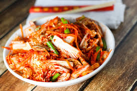
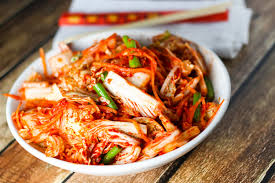

Main Course
 

These are some of the most famous foods in Asia. They come from many different countries such as Korea, Taiwan, China, and Japan.
Starting from the left, we have ramen which originated in China although it is well known in Japan. It is a combination of noodles, soup, and dumplings. The The next food is sushi which originated in Japan. It is a cobination of seafood, rice, and seaweed. IT is a fairly simple dish but is very delivious. Next, we have the steamed bun which is also known as Xiao Long Bao. It origninated from Taiwan and within the skin, there is meat along with a little bit of soup to give you that extra ting! Lastly, we have kimchi which originated in Korea. It is the most traditional food out of all of them. It is spricy and good for the body too. These are a few of the most traditional and popualr foods in Asia.
Dessert&Drinks
These are some of the tastiest and famous desserts in Asian.
Starting from the left we have boba milk tea which is one of the best drinks ever. It was originated in Taiwan. Next, we have dragon beard's candy originally from Korea. It is made up of sticky candy that has been stretched and pulled to over 3,000 strands. Inside they fil it with paunuts or whatever filling you would like. Next, we have an egg tart which is basically like a fruit tart but with egg "pudding" in the middle. (Originally from China) It is definetely something you could eat on a daily basis. Last, we have tapioca pudding. Specifically, the mango coconut tapioca pudding is the original along with the most famous in the world today. It is one of my personal favorites to this day! All of these desserts are traditional but also perfect. Not too sweet and not too repetitive!
Some info: Asia
Asia is Earth's largest and most populous continent, located primarily in the Eastern and Northern Hemispheres. It shares the continental landmass of Eurasia with the continent of Europe and the continental landmass of Afro-Eurasia with both Europe and Africa.
Population
4.463 billion